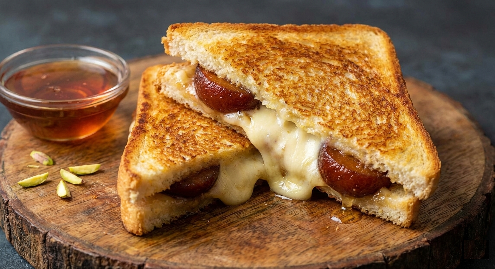

Gulab Jamun Grilled Cheese

Golden, buttery bread embraces molten cheese and syrup-soaked gulab jamun, where sweet meets savory in a rich, indulgent melt.
Description
Ingredients:
- Gulab jamun (slightly crushed)
- Sliced bread (thick)
- Mozzarella or mild cheddar cheese
- Butter
- Cardamom powder (pinch)
Steps:
- Lightly mash gulab jamun and mix with a pinch of cardamom.
- Butter both sides of the bread
- Layer cheese, gulab jamun mixture, then more cheese between slices.
- Grill on low heat until bread is crisp and cheese is fully melted.
- Rest for 30 seconds, slice, and serve warm with a bowl of honey for extra fun.
RETURN TO RECIPES